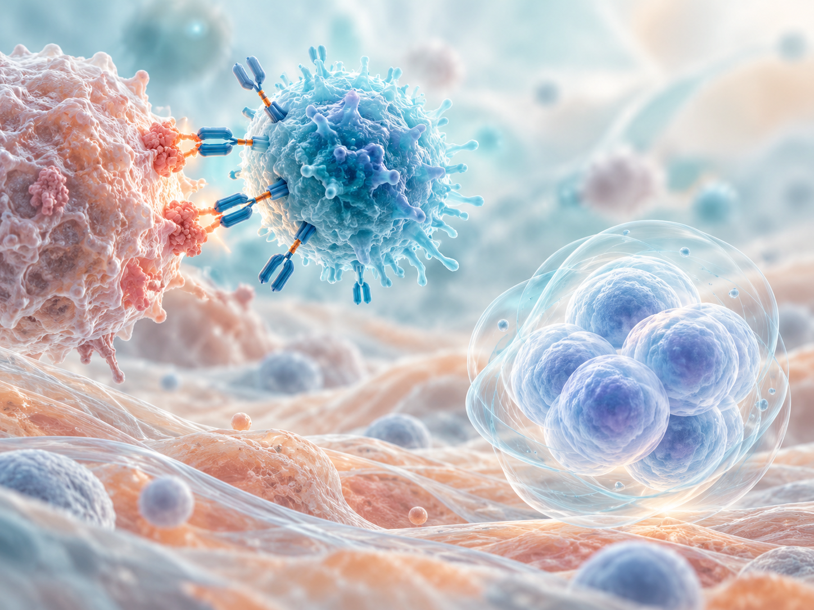
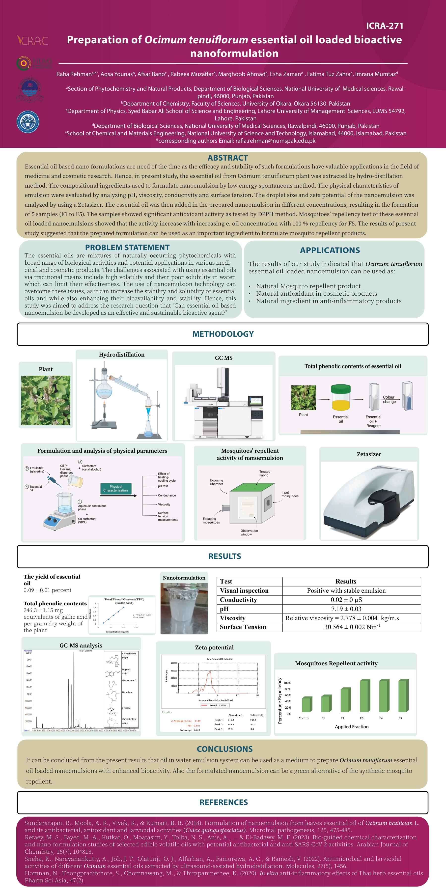
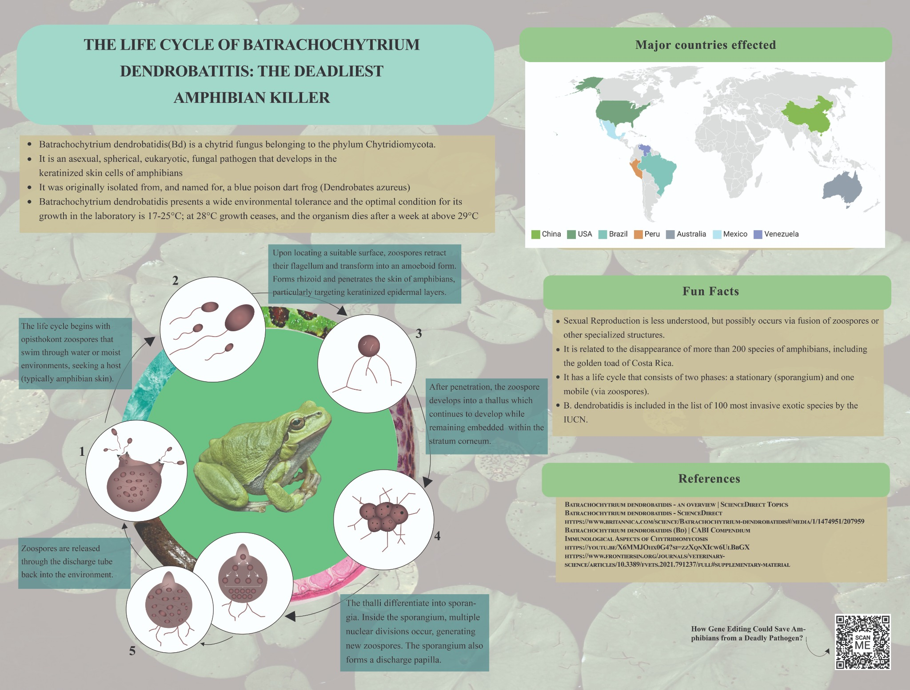

Academic presentation
Nanotechnology in Cosmetics
Cosmetic delivery systems, sunscreens and topical acne-treatment concepts.
View details ↗A collection of conference posters, academic presentations, and scientific visual work developed throughout my academic journey.
Cosmetic delivery systems, sunscreens and topical acne-treatment concepts.
View details ↗
CAR-T therapies and autologous stem-cell approaches.
View details ↗
Essential oil nanoformulation research · original poster and conference abstract.
View details ↗
An educational poster explaining the fungal pathogen’s life cycle.
View details ↗For academic discussions, prospective graduate supervision and research-related conversations.